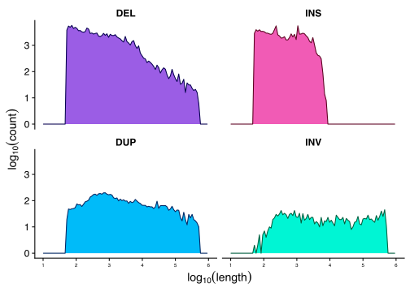
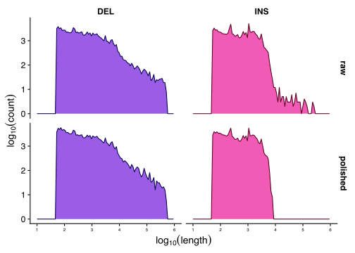
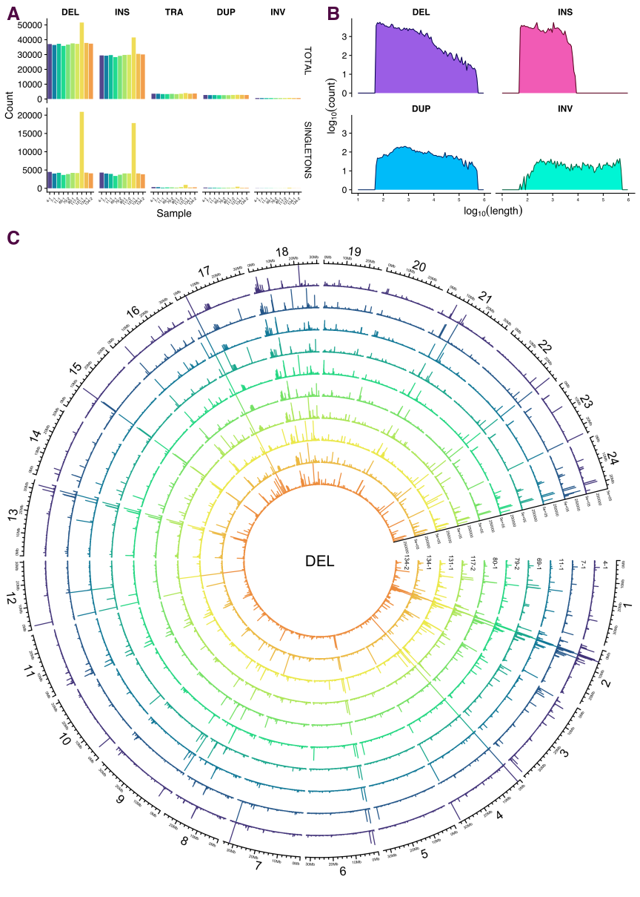

Structural variants
Ian Brettell
2021-03-19
Email from Tom, 18 January:
1. “Polish” SV calls using Illumina data: https://github.com/smehringer/SViper
Please explore the above - get install and tested.
Nanopore VCF files:
- WITH SEQUENCES:
ll /hps/research1/birney/users/adrien/indigene/analyses/indigene_nanopore_DNA/brain_run2/DNA_analysis/results/SV/sniffles_all_OLD/merged.vcf - WITHOUT SEQUENCES:
/hps/research1/birney/users/adrien/indigene/analyses/indigene_nanopore_DNA/brain_run2/DNA_analysis/results/SV/sniffles_all/merged.vcf
SViper says: >The vcf file must be a structural variant format (tags instead of sequences, e.g. <DEL>). Also the INFO field must include the END tag, giving the end position of the variant, as well as the SVLEN tag in case of insertions.
Then we need to map Illumina ID to the Nanopore VCF and figure out how to run the polishing.
Once done we need to summarise and describe the SV’s a little with some annotations etc - I will make a start with doing this part and we catchup once you have looked at the polishing
2. catchup with Jack on repeats (both MIKK panel and Nanopore assemblies). - create one plot for each paper
[3.] Fecundity - I will send you the data and a description of what exactly it is later today. - we will need a general description of the data, descriptive stats and a heritability estimate - plus a single plot or table (for MIKK panel paper)
[4.] Add to txt within the two documents - we can catch-up on this later in the week.
1 Polish SV calls with Illumina data
1.1 Setup
Working directory on EBI cluster: /hps/research1/birney/users/ian/mikk_paper/mikk_genome/sv_analysis GitHub repo: https://github.com/brettellebi/mikk_genome
1.1.1 conda envs
1.1.1.1 sv_env
# Make conda env
mamba create -n sv_env
conda activate sv_env
# Install packages
mamba install -c bioconda bcftools sniffles
mamba install -c conda-forge r-base r-tidyverse
# Export to file
conda env export > envs/sv_env/sv_env.yaml1.1.1.2 baseR
# Activate
conda activate baseR
# Export
conda env export > envs/baseR/baseR.yaml1.1.2 renv
# Initiate
renv::init()
# Snapshot
renv::snapshot()
# Restore
renv::restore()1.1.2.1 Source
library(here)
source(here::here("code", "scripts", "sv_analysis", "source.R"))1.1.3 Nanopore VCF
/hps/research1/birney/users/adrien/analyses/medaka_DNA_promethion/brain_run2/DNA_analysis/results/SV/sniffles_all/merged.vcf
Created with:
# First used:
sniffles \
--min_support 3 \
--max_num_splits 7 \
--max_distance 1000 \
--min_length 50 \
--minmapping_qual 20 \
--min_seq_size 1000 \
--allelefreq 0.1 \
-t {threads} \
-m {input_bam} \
-v {output_vcf}Adrien: >Then I filtered and merged all the variants from the different samples together with survivor and recalled variants a second time in forced mode using the merged set with sniffles again using the same options.
1.1.3.1 Copy to working directory
# With sequences
nano_raw=/hps/research1/birney/users/adrien/indigene/analyses/indigene_nanopore_DNA/brain_run2/DNA_analysis/results/SV/sniffles_all_OLD/merged.vcf
out_path=../sv_analysis/vcfs/ont_raw_with_seq.vcf
## Copy
cp $nano_raw $out_path
# Without sequences
nano_raw=/hps/research1/birney/users/adrien/indigene/analyses/indigene_nanopore_DNA/brain_run2/DNA_analysis/results/SV/sniffles_all/merged.vcf
out_path=../sv_analysis/vcfs/ont_raw.vcf
## Copy
cp $nano_raw $out_path1.1.3.2 Rename samples
1.1.3.2.1 With sequences
conda activate sv_env
in_vcf=../sv_analysis/vcfs/ont_raw_with_seq.vcf
sample_file=data/sv_analysis/20210205_ont_raw_samples_file.txt
out_vcf=../sv_analysis/vcfs/ont_raw_with_seq_rehead.vcf
# Make samples key file
bcftools query -l $in_vcf \
> tmp1
cut -f4 -d'/' tmp1 | cut -f1 -d'_' \
> tmp2
paste -d' ' tmp1 tmp2 > $sample_file
rm tmp1 tmp2
# Rename VCF
bcftools reheader \
--samples $sample_file \
--output $out_vcf \
$in_vcf1.1.3.2.2 Without sequences
conda activate sv_env
in_vcf=../sv_analysis/vcfs/ont_raw.vcf
sample_file=data/sv_analysis/20210212_ont_raw_samples_file.txt
out_vcf=../sv_analysis/vcfs/ont_raw_rehead.vcf
# Make samples key file
bcftools query -l $in_vcf \
> tmp1
cut -f4 -d'/' tmp1 | cut -f1 -d'_' \
> tmp2
paste -d' ' tmp1 tmp2 > $sample_file
rm tmp1 tmp2
# Rename VCF
bcftools reheader \
--samples $sample_file \
--output $out_vcf \
$in_vcf1.1.3.3 Get stats
1.1.3.3.1 With sequences
conda activate sv_mikk
in_vcf=../sv_analysis/vcfs/ont_raw_with_seq.vcf
stats_out=../sv_analysis/vcfs/ont_raw_with_seq.stats
# Get stats
bcftools stats \
$in_vcf \
> $stats_out1.1.3.3.2 Without sequences
conda activate sv_mikk
in_vcf=../sv_analysis/vcfs/ont_raw.vcf
stats_out=../sv_analysis/vcfs/ont_raw.stats
# Get stats
bcftools stats \
$in_vcf \
> $stats_out1.1.3.4 Split per sample
1.1.3.4.1 With sequences
conda activate sv_mikk
in_vcf=../sv_analysis/vcfs/ont_raw_with_seq_rehead.vcf
out_dir=../sv_analysis/vcfs/ont_raw_with_seq_rehead_per_sample
mkdir -p $out_dir
# Split by sample
bcftools +split \
$in_vcf \
--output $out_dir1.1.3.4.2 Without sequences
conda activate sv_mikk
in_vcf=../sv_analysis/vcfs/ont_raw_rehead.vcf
out_dir=../sv_analysis/vcfs/ont_raw_rehead_per_sample
mkdir -p $out_dir
# Split by sample
bcftools +split \
$in_vcf \
--output $out_dir1.1.4 Illumina VCF
1.1.4.1 Copy to working directory
conda activate sv_env
in_vcf=/nfs/research1/birney/projects/medaka/inbred_panel/medaka-alignments-release-94/vcf/medaka_inbred_panel_ensembl_new_reference_release_94.vcf
out_vcf=../sv_analysis/vcfs/ill_raw.vcf.gz
# Compress and copy
bsub \
-M 30000 \
-o ../log/20210208_comp_ill.out \
-e ../log/20210208_comp_ill.err \
bsub -Is bash \
"""
conda activate sv_env ;
bcftools view \
--output-type z \
--output $out_vcf \
$in_vcf
""" 1.1.4.2 Rename and filter for ONT samples
1.1.4.2.1 Pull out IDs for relevant samples
ont_samples = here::here("data", "sv_analysis", "20210205_ont_raw_samples_file.txt")
ill_samples = here::here("data","20200206_cram_id_to_line_id.txt")
out_file = here::here("data", "sv_analysis", "20210205_ill_key_ont_samples.txt")
out_samples = here::here("data", "sv_analysis", "20210205_ont_samples_only.txt")
# Read in tables
ont_key = read.table(ont_samples)
ill_key = read.table(ill_samples, comment.char = "\"", header = T) %>%
dplyr::mutate(line = gsub("_", "-", line))
# Find matches
out = ill_key[ill_key$line %in% ont_key$V2, ]
# Write to files
## Key file
readr::write_delim(out, out_file, delim = " ", col_names = F)
## Just samples
readr::write_lines(out$cram_file, out_samples)1.1.4.2.2 Rename and filter
in_vcf=../sv_analysis/vcfs/ill_raw.vcf.gz
samples_file=data/sv_analysis/20210205_ont_samples_only.txt
samples_key=data/sv_analysis/20210205_ill_key_ont_samples.txt
out_vcf=../sv_analysis/vcfs/ill_raw_rehead.vcf.gz
out_dir=../sv_analysis/vcfs/ill_raw_rehead_per_sample
mkdir -p $out_dir
# Filter for target samples and rehead
bcftools view \
--samples-file $samples_file \
--output-type u \
$in_vcf |\
bcftools reheader \
--samples $samples_key \
--output $out_vcf
# Split by sample
bcftools +split \
$out_vcf \
--output $out_dir1.1.5 BAMs
1.1.5.1 Illumina .bam files
Copy to local.
sample_key=data/sv_analysis/20210205_ill_key_ont_samples.txt
ill_bam_dir=/nfs/research1/birney/projects/medaka/inbred_panel/medaka-alignments-release-94/bam
out_dir=../sv_analysis/bams
mkdir -p $out_dir
# Copy over
for sample in $(cut -f1 -d' ' $sample_key ) ; do
cp $ill_bam_dir/$sample.bai $out_dir ;
done
# SViper needs bams in .bam.bai format. Original {sample}.bai files need to be copied to {sample}.bam.bai
for file in $( find $out_dir/*.bai ) ; do
new_filename=$( echo $file | sed 's/.bai/.bam.bai/g' ) ;
mv $file $new_filename ;
done## cut: data/sv_analysis/20210205_ill_key_ont_samples.txt: No such file or directory
## find: ../sv_analysis/bams/*.bai: No such file or directory1.1.5.2 Nanopore .bam files
Sit here: /hps/research1/birney/users/adrien/indigene/analyses/indigene_nanopore_DNA/brain_run2/DNA_analysis/results/SV/ngmlr_alignments/
1.2 Polish Nanopore reads with SViper
1.2.1 Create Singularity container
module load singularity
# Build
singularity build \
--remote ../sing_conts/sviper.sif \
envs/sviper/20210204_sviper.def
# Open interactive shell
bsub -Is "singularity shell ../sing_conts/sviper.sif"
# Works! 1.2.2 Test
# Load singularity
module load singularity
# Pull image built with `envs/sviper/20210204_sviper.def`
bsub -M 30000 -n 4 -Is "singularity shell ../sing_conts/sviper.sif"
#######################
# Variables
#######################
## Container
container=../sing_conts/sviper.sif
## Sample
sample=11-1
sample_key=data/sv_analysis/20210205_ill_key_ont_samples.txt
## VCF to polish
ont_vcf=../sv_analysis/vcfs/ont_raw_rehead_per_sample/$sample.vcf
## Illumina BAM
ill_cram_id=$(grep $sample $sample_key | cut -f1 -d' ')
ill_bam_dir=../sv_analysis/bams
ill_bam=$ill_bam_dir/$ill_cram_id.bam
## Nanopore BAM
ont_bam_dir=/hps/research1/birney/users/adrien/indigene/analyses/indigene_nanopore_DNA/brain_run2/DNA_analysis/results/SV/ngmlr_alignments
ont_bam=$(find $ont_bam_dir/$sample*.bam)
## Reference
ref=../refs/Oryzias_latipes.ASM223467v1.dna.toplevel.fa
## Output directory
out_dir=../sv_analysis/vcfs/sviper
mkdir -p $out_dir
#######################
# TEST call sviper
#######################
sviper \
--candidate-vcf $ont_vcf \
--short-read-bam $ill_bam \
--long-read-bam $ont_bam \
--reference $ref \
--output-prefix $out_dir/$sample1.2.3 True
# Load singularity
module load singularity
# Pull image built with `envs/sviper/20210204_sviper.def`
bsub -M 30000 -n 4 -Is "singularity shell ../sing_conts/sviper.sif"
#######################
# Variables
#######################
## Sample
sample=11-1
sample_key=data/sv_analysis/20210205_ill_key_ont_samples.txt
## VCF to polish
ont_vcf=../sv_analysis/vcfs/ont_raw_rehead_per_sample/$sample.vcf
## Illumina BAM
ill_cram_id=$(grep $sample $sample_key | cut -f1 -d' ')
ill_bam_dir=../sv_analysis/bams
ill_bam=$ill_bam_dir/$ill_cram_id.bam
## Nanopore BAM
ont_bam_dir=/hps/research1/birney/users/adrien/indigene/analyses/indigene_nanopore_DNA/brain_run2/DNA_analysis/results/SV/ngmlr_alignments
ont_bam=$(find $ont_bam_dir/$sample*.bam)
## Reference
ref=../refs/Oryzias_latipes.ASM223467v1.dna.toplevel.fa
## Container
container=../sing_conts/sviper.sif
## Output directory
out_dir=../sv_analysis/vcfs/sviper
mkdir -p $out_dir
#######################
# TEST call sviper
#######################
sviper \
--candidate-vcf $ont_vcf \
--short-read-bam $ill_bam \
--long-read-bam $ont_bam \
--reference $ref \
--output-prefix $out_dir/$sample
#######################
# TRUE call sviper
#######################
module load singularity
# Global variables
## Sample key
sample_key=data/sv_analysis/20210205_ill_key_ont_samples.txt
## BAM dirs
ill_bam_dir=../sv_analysis/bams
ont_bam_dir=/hps/research1/birney/users/adrien/indigene/analyses/indigene_nanopore_DNA/brain_run2/DNA_analysis/results/SV/ngmlr_alignments
## Reference
ref=../refs/Oryzias_latipes.ASM223467v1.dna.toplevel.fa
## Container
container=../sing_conts/sviper.sif
## Output directory
out_dir=../sv_analysis/vcfs/sviper
mkdir -p $out_dir
for sample in $(cut -f2 -d' ' $sample_key | tail -n+2 ) ; do
# Set variables
## VCF to polish
ont_vcf=../sv_analysis/vcfs/ont_raw_rehead_per_sample/$sample.vcf
## Illumina BAM
ill_cram_id=$(grep " $sample" $sample_key | cut -f1 -d' ')
ill_bam=$ill_bam_dir/$ill_cram_id.bam
## Nanopore BAM
ont_bam=$(find $ont_bam_dir/$sample*.bam)
# Run SViper
bsub \
-M 30000 \
-n 16 \
-o ../log/20210212_sviper_$sample.out \
-e ../log/20210212_sviper_$sample.err \
"""
singularity exec $container \
sviper \
--candidate-vcf $ont_vcf \
--short-read-bam $ill_bam \
--long-read-bam $ont_bam \
--reference $ref \
--output-prefix $out_dir/$sample
"""
done
# 4-2 and 7-2 failed with no error message1.2.4 Merge
# Get list of vcf paths
in_dir=../sv_analysis/vcfs/sviper
out_dir=$in_dir/merged
mkdir -p $out_dir
in_vcfs=$(find $in_dir/*.vcf | tr '\n' ' ')
bcftools merge \
--output $out_dir/all.vcf\
$in_vcfs
# Requires them to be bgzipped
# Try with Picard
in_dir=../sv_analysis/vcfs/sviper
out_dir=$in_dir/merged
mkdir -p $out_dir
find $in_dir/*.vcf > tmp.list
picard MergeVcfs \
I=tmp.list \
O=$out_dir/merged.vcf.gz
rm tmp.list
#Exception in thread "main" java.lang.IllegalArgumentException: Input file /hps/research1/birney/users/ian/mikk_paper/mikk_genome/../sv_analysis/vcfs/sviper/117-2.vcf has sample entries that don't match the other files.1.2.5 Get data from SViper
in_dir=../sv_analysis/vcfs/sviper
out_dir=data/sv_analysis/20210217_sviper_filter_pass
mkdir -p $out_dir
for in_vcf in $(find $in_dir/*vcf) ; do
sample=$(basename $in_vcf | cut -f1 -d'.' ) ;
bcftools query \
--exclude 'GT~"\."' \
--format '%CHROM,%POS,%ALT,%FILTER,%INFO/SVLEN,%INFO/SVTYPE,%INFO/CHR2,%INFO/END,[%GT],[%LN],[%ST]\n' \
--output $out_dir/$sample.csv \
$in_vcf ;
done1.2.6 Get data from original VCF
in_dir=../sv_analysis/vcfs/ont_raw_rehead_per_sample
out_dir=data/sv_analysis/20210217_raw_ont_filter_pass
mkdir -p $out_dir
for in_vcf in $(find $in_dir/*vcf) ; do
sample=$(basename $in_vcf | cut -f1 -d'.' ) ;
bcftools query \
--include 'FILTER="PASS"' \
--exclude 'GT~"\."' \
--format '%CHROM,%POS,%ALT,%FILTER,%INFO/SVLEN,%INFO/SVTYPE,%INFO/CHR2,%INFO/END,[%GT],[%LN],[%ST]\n' \
--output $out_dir/$sample.csv \
$in_vcf ;
done1.2.7 Get polish stats
in_dir=../sv_analysis/vcfs/sviper
out_dir=data/sv_analysis/20210226_polish_stats
mkdir -p $out_dir
for in_vcf in $(find $in_dir/*vcf) ; do
sample=$(basename $in_vcf | cut -f1 -d'.' ) ;
bcftools query \
--include 'FILTER="PASS"' \
--exclude 'GT~"\."' \
--format '%CHROM,%POS,%FILTER,%INFO/SVTYPE,[%LN]\n' \
--output $out_dir/$sample.csv \
$in_vcf ;
done2 Analysis
2.1 Read in SV data
2.1.1 SViper polished
in_dir = here::here("data", "sv_analysis/20210217_sviper_filter_pass")
in_files = list.files(in_dir, full.names = T)
names(in_files) = basename(in_files) %>%
str_remove(".csv")
sv_df_pol = lapply(in_files, function(in_file){
df = readr::read_csv(in_file,
col_names = c("CHROM", "POS", "ALT", "FILTER", "SVLEN", "SVTYPE", "CHR2", "END", "GT", "LN", "ST"),
col_types = c("cicciccicic"))
return(df)
}) %>%
dplyr::bind_rows(.id = "SAMPLE") %>%
# add "chr" to beginning of CHROM column
dplyr::mutate(CHROM = paste("chr", CHROM, sep = ""))Counts for FILTER by SVTYPE
sv_df_pol %>%
dplyr::group_by(SVTYPE, FILTER) %>%
dplyr::count()## [38;5;246m# A tibble: 14 x 3[39m
## [38;5;246m# Groups: SVTYPE, FILTER [14][39m
## SVTYPE FILTER n
## [3m[38;5;246m<chr>[39m[23m [3m[38;5;246m<chr>[39m[23m [3m[38;5;246m<int>[39m[23m
## [38;5;250m 1[39m DEL FAIL1 227
## [38;5;250m 2[39m DEL FAIL2 [4m1[24m[4m9[24m473
## [38;5;250m 3[39m DEL FAIL4 59
## [38;5;250m 4[39m DEL FAIL5 [4m1[24m[4m1[24m126
## [38;5;250m 5[39m DEL PASS [4m3[24m[4m8[24m[4m4[24m990
## [38;5;250m 6[39m DUP SKIP [4m2[24m[4m6[24m823
## [38;5;250m 7[39m INS FAIL1 517
## [38;5;250m 8[39m INS FAIL2 [4m3[24m[4m4[24m600
## [38;5;250m 9[39m INS FAIL4 89
## [38;5;250m10[39m INS FAIL5 [4m9[24m350
## [38;5;250m11[39m INS PASS [4m3[24m[4m0[24m[4m7[24m407
## [38;5;250m12[39m INS SKIP 3
## [38;5;250m13[39m INV SKIP [4m6[24m280
## [38;5;250m14[39m TRA SKIP [4m3[24m[4m5[24m394**SViper only polishes insertions and deletions! Actually says that in the first line of the README. Will have to conditionally filter.
2.1.2 Plot frequency of different types of fails
sv_filter_desc = sv_df_pol %>%
dplyr::group_by(SVTYPE, FILTER) %>%
# dplyr::count() %>%
dplyr::mutate(FILTER = factor(FILTER, levels = names(filter_recode)),
FILTER_DESC = dplyr::recode(FILTER, !!!filter_recode)) %>%
dplyr::filter(SVTYPE %in% c("DEL", "INS")) %>%
# dplyr::count(FILTER)
ggplot() +
geom_bar(aes(FILTER_DESC, fill = SVTYPE)) +
theme_bw() +
theme(axis.text.x = element_text(size = 5)) +
facet_wrap(~SVTYPE) +
scale_fill_manual(values = svtype_hist_pal) +
xlab("Filter description") +
guides(fill = F)ggsave(here::here("plots", "sv_analysis", "20210319_sv_filter.png"),
device = "png",
width = 20,
height = 9.375,
units = "cm",
dpi = 400)ggplotly(sv_filter_desc)# Filter out non-passes for DEL and INS STYPEs
sv_df_pol = sv_df_pol %>%
dplyr::filter(!(SVTYPE %in% c("DEL", "INS") & FILTER != "PASS"))
sv_df_pol %>%
dplyr::group_by(SVTYPE, FILTER) %>%
dplyr::count()## [38;5;246m# A tibble: 5 x 3[39m
## [38;5;246m# Groups: SVTYPE, FILTER [5][39m
## SVTYPE FILTER n
## [3m[38;5;246m<chr>[39m[23m [3m[38;5;246m<chr>[39m[23m [3m[38;5;246m<int>[39m[23m
## [38;5;250m1[39m DEL PASS [4m3[24m[4m8[24m[4m4[24m990
## [38;5;250m2[39m DUP SKIP [4m2[24m[4m6[24m823
## [38;5;250m3[39m INS PASS [4m3[24m[4m0[24m[4m7[24m407
## [38;5;250m4[39m INV SKIP [4m6[24m280
## [38;5;250m5[39m TRA SKIP [4m3[24m[4m5[24m3942.1.3 ONT raw
in_dir = here::here("data", "sv_analysis/20210217_raw_ont_filter_pass")
in_files = list.files(in_dir, full.names = T)
names(in_files) = basename(in_files) %>%
str_remove(".csv")
sv_df_raw = lapply(in_files, function(in_file){
df = readr::read_csv(in_file,
col_names = c("CHROM", "POS", "ALT", "FILTER", "SVLEN", "SVTYPE", "CHR2", "END", "GT", "LN", "ST"),
col_types = c("cicciccicic"))
return(df)
}) %>%
dplyr::bind_rows(.id = "SAMPLE") %>%
# add "chr" to beginning of CHROM column
dplyr::mutate(CHROM = paste("chr", CHROM, sep = ""))2.1.4 Combine into single df
sv_df = list("polished" = sv_df_pol,
"raw" = sv_df_raw) %>%
dplyr::bind_rows(.id = "DATASET") %>%
# factor samples and dataset
dplyr::mutate(SAMPLE = factor(SAMPLE, levels = ont_samples),
DATASET = factor(DATASET, levels = c("raw", "polished")))2.2 Plot counts of SV types (total)
# Histogram of LN
svtype_distinct_df = sv_df %>%
dplyr::filter(DATASET == "polished",
SVTYPE != "TRA") %>%
dplyr::mutate(SVTYPE = factor(SVTYPE, levels = c("DEL", "INS", "DUP", "INV"))) %>%
dplyr::select(SVTYPE, CHROM, POS, END, LN) %>%
dplyr::distinct()
svlen_counts_plot = svtype_distinct_df %>%
ggplot(aes(x = log10(LN),
y = ifelse(log10(..count..) < 0,
0,
log10(..count..)),
fill = SVTYPE,
colour = SVTYPE)) +
geom_area(stat = "bin",
bins = 100) +
scale_fill_manual(values = svtype_hist_pal) +
scale_colour_manual(values = karyoploteR::darker(svtype_hist_pal)) +
guides(fill = F) +
guides(colour = F) +
scale_x_continuous(breaks = seq(1, 6, 1),
limits = c(1, 6)) +
facet_wrap(~SVTYPE, nrow = 2, ncol = 2) +
xlab(expression(log[10](length))) +
ylab(expression(log[10](count))) +
theme_cowplot() +
theme(axis.text.x = element_text(size = 6),
strip.text = element_text(face = "bold"),
strip.background = element_blank()
)
svlen_counts_plot
2.2.1 Compare counts of DEL and INS before and after polishing
# Histogram of LN
polish_comp_plot = sv_df %>%
dplyr::filter(SVTYPE %in% c("DEL", "INS")) %>%
dplyr::mutate(SVTYPE = factor(SVTYPE, levels = c("DEL", "INS", "DUP", "INV"))) %>%
dplyr::select(DATASET, CHROM, POS, END, SVTYPE, LN) %>%
dplyr::distinct() %>%
ggplot(aes(x = log10(LN),
y = ifelse(log10(..count..) < 0,
0,
log10(..count..)),
fill = SVTYPE,
colour = SVTYPE)) +
geom_area(stat = "bin",
bins = 100) +
scale_fill_manual(values = svtype_hist_pal) +
scale_colour_manual(values = karyoploteR::darker(svtype_hist_pal)) +
guides(fill = F) +
guides(colour = F) +
scale_x_continuous(breaks = seq(1, 6, 1),
limits = c(1, 6)) +
facet_grid(rows = vars(DATASET),
cols = vars(SVTYPE)) +
xlab(expression(log[10](length))) +
ylab(expression(log[10](count))) +
theme_cowplot() +
theme(axis.text.x = element_text(size = 6),
strip.text = element_text(face = "bold"),
strip.background = element_blank()
)
polish_comp_plot
ggsave(here::here("plots", "sv_analysis", "20210319_polish_count_comparison.png"),
device = "png",
width = 15,
height = 9.375,
units = "cm",
dpi = 400)2.3 Plot counts of SV types (per sample)
Get order of SV type by frequency
# Get order
type_order = dplyr::count(sv_df, SVTYPE) %>%
dplyr::arrange(desc(n)) %>%
dplyr::pull(SVTYPE)
# Set palette
pal_svtype = grDevices::colorRampPalette(pal_brainbow)(length(ont_samples_pol))
names(pal_svtype) = ont_samples_pol2.3.1 All
sv_counts_all = sv_df %>%
dplyr::filter(DATASET == "polished") %>%
group_by(SAMPLE, SVTYPE) %>%
summarise(N = n()) %>%
dplyr::mutate(FACET = "TOTAL") %>%
dplyr::ungroup()## `summarise()` has grouped output by 'SAMPLE'. You can override using the `.groups` argument.2.3.2 Singletons
# Create DF with SAMPLE for binding later
sv_df_pol_samps = sv_df %>%
# exclude raw data, take only polished
dplyr::filter(DATASET == "polished") %>%
# select only target cols
dplyr::select(CHROM, POS, SVTYPE, LN, SAMPLE)
# Create DF without SAMPLE for detecting duplicates
sv_df_pol_dupes = sv_df %>%
# exclude raw data, take only polished
dplyr::filter(DATASET == "polished") %>%
# select only target cols
dplyr::select(CHROM, POS, SVTYPE, LN)
## Get unique rows
uq_svs = sv_df_pol_dupes[!(duplicated(sv_df_pol_dupes) | duplicated(sv_df_pol_dupes, fromLast = T)), ]
# Join back with other variables
sv_sings = dplyr::right_join(sv_df_pol_samps, uq_svs)## Joining, by = c("CHROM", "POS", "SVTYPE", "LN")knitr::kable(head(sv_sings))| CHROM | POS | SVTYPE | LN | SAMPLE |
|---|---|---|---|---|
| chr1 | 15558 | TRA | 1 | 11-1 |
| chr1 | 116343 | DEL | 530 | 11-1 |
| chr1 | 131785 | INS | 56 | 11-1 |
| chr1 | 230567 | TRA | 1 | 11-1 |
| chr1 | 231887 | DEL | 103 | 11-1 |
| chr1 | 231872 | TRA | 1 | 11-1 |
# Get singleton counts
sv_counts_sings = sv_sings %>%
dplyr::group_by(SAMPLE, SVTYPE) %>%
dplyr::summarise(N = n()) %>%
dplyr::mutate(FACET = "SINGLETONS") %>%
dplyr::ungroup()## `summarise()` has grouped output by 'SAMPLE'. You can override using the `.groups` argument.2.3.3 Bind together and plot
# Bind DFs
sv_counts = dplyr::bind_rows(sv_counts_all,
sv_counts_sings) %>%
dplyr::mutate(FACET = factor(FACET, levels = c("TOTAL", "SINGLETONS")),
SVTYPE = factor(SVTYPE, levels = type_order))
# Set palette
pal_svcounts = grDevices::colorRampPalette(pal_smrarvo)(length(ont_samples))
names(pal_svcounts) = ont_samples
# Plot
svtype_counts_plot = sv_counts %>%
ggplot() +
geom_col(aes(SAMPLE, N, fill = SAMPLE)) +
facet_grid(rows = vars(FACET),
cols = vars(SVTYPE),scales = "free_y") +
scale_fill_manual(values = pal_svcounts) +
theme_cowplot() +
theme(strip.background = element_blank(),
axis.text.x = element_text(size = 5,angle = 45,hjust = 1),
strip.text.x = element_text(face = "bold")) +
guides(fill = F) +
xlab("Sample") +
ylab("Count")ggplotly(svtype_counts_plot)2.4 Circos plots
SVGs become very large (~80 MB). Hence PNG.
Create scaffold
# Read in chromosome data
chroms = read.table(here::here("data/Oryzias_latipes.ASM223467v1.dna.toplevel.fa_chr_counts.txt")) %>%
dplyr::select(chr = V1, end = V2) %>%
dplyr::mutate(chr = paste("chr", chr, sep = ""),
start = 0,
end = as.numeric(end)) %>%
dplyr::select(chr, start, end)2.4.1 DEL
sv_dels = sv_df %>%
dplyr::filter(DATASET == "polished",
SVTYPE == "DEL") %>%
dplyr::select(CHROM, POS, END, SAMPLE, LN) %>%
dplyr::mutate(SAMPLE = factor(SAMPLE, levels = ont_samples_pol)) %>%
split(., f = .$SAMPLE)out_plot = here::here("plots", "sv_analysis", "20210224_sv_dels_lines.png")png(out_plot,
width = 20,
height = 20,
units = "cm",
res = 400)
# Get max value for `ylim`
max_len = max(sapply(sv_dels, function(sample) max(sample$LN)))
max_len = round.choose(max_len, 1e5, dir = 1)
# Choose palette
pal = grDevices::colorRampPalette(pal_smrarvo)(length(sv_dels))
# Set parameters
## Decrease cell padding from default c(0.02, 1.00, 0.02, 1.00)
circos.par(cell.padding = c(0, 0, 0, 0),
track.margin = c(0, 0),
gap.degree = c(rep(1, nrow(chroms) - 1), 14))
# Initialize plot
circos.initializeWithIdeogram(chroms,
plotType = c("axis", "labels"),
major.by = 1e7,
axis.labels.cex = 0.25*par("cex"))
# Print label in center
text(0, 0, "DEL")
counter = 0
lapply(sv_dels, function(sample) {
# Set counter
counter <<- counter + 1
# Create track
circos.genomicTrack(sample,
panel.fun = function(region, value, ...) {
circos.genomicLines(region,
value,
type = "h",
col = pal[counter],
cex = 0.05)
},
track.height = 0.07,
bg.border = NA,
ylim = c(0, max_len))
# Add SV length y-axis label
circos.yaxis(side = "right",
at = c(2.5e5, max_len),
labels.cex = 0.25*par("cex"),
tick.length = 2
)
# Add SAMPLE y-axis label
circos.text(2e6, 2.5e5,
labels = names(sv_dels)[counter],
sector.index = "chr1",
cex = 0.4*par("cex"))
})
circos.clear()
dev.off()knitr::include_graphics(basename(out_plot))
2.4.2 INS
NOTE: 25982/351996 insertions have an END that is less than POS. Make the END the same as POS for the purposes of plotting their location.
sv_ins = sv_df %>%
dplyr::filter(DATASET == "polished",
SVTYPE == "INS") %>%
dplyr::select(CHROM, POS, END, SAMPLE, LN) %>%
# Factorise SAMPLE to order
dplyr::mutate(SAMPLE = factor(SAMPLE, levels = ont_samples_pol)) %>%
# if END is less than POS, make it the same as POS
dplyr::mutate(END = dplyr::if_else(END < POS, POS, END)) %>%
# dplyr::slice_sample(n = 10000) %>%
split(., f = .$SAMPLE)out_plot = here::here("plots", "sv_analysis", "20210224_sv_ins_lines.png")png(out_plot,
width = 20,
height = 20,
units = "cm",
res = 400)
# Get max value for `ylim`
max_len = max(sapply(sv_ins, function(sample) max(sample$LN)))
max_len = round.choose(max_len, 1e4, dir = 1)
# Choose palette
pal = fishualize::fish(n = length(sv_ins), option = "Cirrhilabrus_solorensis")
# Set parameters
## Decrease cell padding from default c(0.02, 1.00, 0.02, 1.00)
circos.par(cell.padding = c(0, 0, 0, 0),
track.margin = c(0, 0),
gap.degree = c(rep(1, nrow(chroms) - 1), 14))
# Initialize plot
circos.initializeWithIdeogram(chroms,
plotType = c("axis", "labels"),
major.by = 1e7,
axis.labels.cex = 0.25*par("cex"))
# Print label in center
text(0, 0, "INS")
counter = 0
lapply(sv_ins, function(sample) {
# Set counter
counter <<- counter + 1
# Create track
circos.genomicTrack(sample,
panel.fun = function(region, value, ...) {
circos.genomicLines(region,
value,
type = "h",
col = pal[counter],
cex = 0.05)
},
track.height = 0.07,
bg.border = NA,
ylim = c(0, max_len))
# Add SV length y-axis label
circos.yaxis(side = "right",
at = c(2.5e5, max_len),
labels.cex = 0.25*par("cex"),
tick.length = 2
)
# Add SAMPLE y-axis label
circos.text(2e6, 1e4,
labels = names(sv_ins)[counter],
sector.index = "chr1",
cex = 0.4*par("cex"))
})
circos.clear()
dev.off()knitr::include_graphics(basename(out_plot))
2.4.3 DUP
NOTE: 307/26823 duplications have an END that is less than POS. Make the END the same as POS.
sv_dups = sv_df %>%
dplyr::filter(DATASET == "polished",
SVTYPE == "DUP") %>%
dplyr::select(CHROM, POS, END, SAMPLE, LN) %>%
dplyr::mutate(SAMPLE = factor(SAMPLE, levels = ont_samples_pol)) %>%
# if END is less than POS, make it the same as POS
dplyr::mutate(END = dplyr::if_else(END < POS, POS, END)) %>%
# dplyr::slice_sample(n = 10000) %>%
split(., f = .$SAMPLE)out_plot = here::here("plots", "sv_analysis", "20210224_sv_dups_lines.png")png(out_plot,
width = 20,
height = 20,
units = "cm",
res = 400)
# Get max value for `ylim`
max_len = max(sapply(sv_dups, function(sample) max(sample$LN)))
max_len = round.choose(max_len, 1e5, dir = 1)
# Choose palette
pal = fishualize::fish(n = length(sv_dups), option = "Gramma_loreto")
# Set parameters
## Decrease cell padding from default c(0.02, 1.00, 0.02, 1.00)
circos.par(cell.padding = c(0, 0, 0, 0),
track.margin = c(0, 0),
gap.degree = c(rep(1, nrow(chroms) - 1), 14))
# Initialize plot
circos.initializeWithIdeogram(chroms,
plotType = c("axis", "labels"),
major.by = 1e7,
axis.labels.cex = 0.25*par("cex"))
# Print label in center
text(0, 0, "DUP")
counter = 0
lapply(sv_dups, function(sample) {
# Set counter
counter <<- counter + 1
# Create track
circos.genomicTrack(sample,
panel.fun = function(region, value, ...) {
circos.genomicLines(region,
value,
type = "h",
col = pal[counter],
cex = 0.05)
},
track.height = 0.07,
bg.border = NA,
ylim = c(0, max_len))
# Add SV length y-axis label
circos.yaxis(side = "right",
at = c(2.5e5, max_len),
labels.cex = 0.25*par("cex"),
tick.length = 2
)
# Add SAMPLE y-axis label
circos.text(2e6, 2.5e5,
labels = names(sv_dups)[counter],
sector.index = "chr1",
cex = 0.4*par("cex"))
})
circos.clear()
dev.off()knitr::include_graphics(basename(out_plot))
2.4.4 INV
sv_invs = sv_df %>%
dplyr::filter(DATASET == "polished",
SVTYPE == "INV") %>%
dplyr::select(CHROM, POS, END, SAMPLE, LN) %>%
dplyr::mutate(SAMPLE = factor(SAMPLE, levels = ont_samples_pol)) %>%
# if END is less than POS, make it the same as POS
# dplyr::mutate(END = dplyr::if_else(END < POS, POS, END)) %>%
# dplyr::slice_sample(n = 10000) %>%
split(., f = .$SAMPLE)out_plot = here::here("plots", "sv_analysis", "20210224_sv_invs_lines.png")png(out_plot,
width = 20,
height = 20,
units = "cm",
res = 400)
# Get max value for `ylim`
max_len = max(sapply(sv_invs, function(sample) max(sample$LN)))
max_len = round.choose(max_len, 1e5, dir = 1)
# Choose palette
pal = fishualize::fish(n = length(sv_invs), option = "Lepomis_megalotis")
# Set parameters
## Decrease cell padding from default c(0.02, 1.00, 0.02, 1.00)
circos.par(cell.padding = c(0, 0, 0, 0),
track.margin = c(0, 0),
gap.degree = c(rep(1, nrow(chroms) - 1), 14))
# Initialize plot
circos.initializeWithIdeogram(chroms,
plotType = c("axis", "labels"),
major.by = 1e7,
axis.labels.cex = 0.25*par("cex"))
# Print label in center
text(0, 0, "INV")
counter = 0
lapply(sv_invs, function(sample) {
# Set counter
counter <<- counter + 1
# Create track
circos.genomicTrack(sample,
panel.fun = function(region, value, ...) {
circos.genomicLines(region,
value,
type = "h",
col = pal[counter],
cex = 0.05)
},
track.height = 0.07,
bg.border = NA,
ylim = c(0, max_len))
# Add SV length y-axis label
circos.yaxis(side = "right",
at = c(2.5e5, max_len),
labels.cex = 0.25*par("cex"),
tick.length = 2
)
# Add SAMPLE y-axis label
circos.text(2e6, 2.5e5,
labels = names(sv_invs)[counter],
sector.index = "chr1",
cex = 0.4*par("cex"))
})
circos.clear()
dev.off()knitr::include_graphics(basename(out_plot))
3 Final figure
final_svtype = ggdraw() +
draw_image(here::here("plots", "sv_analysis", "20210224_sv_dels_lines.png"),
x = 0, y = 0, width = 1, height = .75, scale = 1.12) +
draw_plot(svtype_counts_plot,
x = 0, y = .75, width = .5, height = .25) +
draw_plot(svlen_counts_plot,
x = .5, y = .75, width =.5, height = .25) +
draw_plot_label(label = c("A", "B", "C"), size = 25,
x = c(0, .5, 0), y = c(1, 1, .75),color = "#4f0943")
final_svtype
ggsave(here::here("plots", "sv_analysis", "20210319_sv_main.png"),
device = "png",
dpi = 400,
units = "cm",
width = 30,
height = 42)4 Investigate interesting variants
4.1 Large insertion on chr 5
# Get locations of insertions longer than 300 kb on chr 17
sv_ins %>%
dplyr::bind_rows() %>%
dplyr::filter(CHROM == "chr5" & LN > 10000)## [38;5;246m# A tibble: 7 x 5[39m
## CHROM POS END SAMPLE LN
## [3m[38;5;246m<chr>[39m[23m [3m[38;5;246m<int>[39m[23m [3m[38;5;246m<int>[39m[23m [3m[38;5;246m<fct>[39m[23m [3m[38;5;246m<int>[39m[23m
## [38;5;250m1[39m chr5 23[4m7[24m[4m7[24m[4m0[24m083 23[4m7[24m[4m7[24m[4m0[24m083 4-1 [4m1[24m[4m3[24m649
## [38;5;250m2[39m chr5 23[4m7[24m[4m7[24m[4m0[24m083 23[4m7[24m[4m7[24m[4m0[24m083 7-1 [4m1[24m[4m3[24m649
## [38;5;250m3[39m chr5 23[4m7[24m[4m7[24m[4m0[24m083 23[4m7[24m[4m7[24m[4m0[24m083 69-1 [4m1[24m[4m3[24m649
## [38;5;250m4[39m chr5 23[4m7[24m[4m7[24m[4m0[24m083 23[4m7[24m[4m7[24m[4m0[24m083 117-2 [4m1[24m[4m3[24m649
## [38;5;250m5[39m chr5 23[4m7[24m[4m7[24m[4m0[24m083 23[4m7[24m[4m7[24m[4m0[24m083 131-1 [4m1[24m[4m3[24m649
## [38;5;250m6[39m chr5 23[4m7[24m[4m7[24m[4m0[24m083 23[4m7[24m[4m7[24m[4m0[24m083 134-1 [4m1[24m[4m3[24m649
## [38;5;250m7[39m chr5 23[4m7[24m[4m7[24m[4m0[24m083 23[4m7[24m[4m7[24m[4m0[24m083 134-2 [4m1[24m[4m3[24m649grep "23770083" ../sv_analysis/vcfs/ont_raw_with_seq_rehead_per_sample/4-1.vcf
# Returns a sequence that is only 1000 bases long?
#5 23770083 51143 N <INS> . PASS SUPP=12;SUPP_VEC=111111111111;SVLEN=13649;SVTYPE=INS;SVMETHOD=SURVIVOR1.0.7;CHR2=5;END=23770083;CIPOS=0,0;CIEND=0,0;STRANDS=-+GT:PSV:LN:DR:ST:QV:TY:ID:RAL:AAL:CO 1/1:NA:13649:0,6:-+:.:INS:51143:N:TATGAGGGGCTTTATAAGACATTATTTATTCTGAACCATTCACATTCATACATTCTGCTCTCACAGTCATATACTCTTTCGCATACATATATTCTCTTACGCATCCATATATTCTCTCTCACATTCATACATTCTTTGCTCTCACAGTCATATATACTCTCTTTCGCATACATATATTCTCACTTGCACATTCATATATTCTCTCTCGCATGCATATATATTACTTTTACACATACATACATTCTCACTCTATTGTCACTCTTAAAAAGAATGTATGTGTGAAAGACAAGTATATATGAACGTGTGAGGAAGAGTTTATATGTGTGTGTGTGAGAGAGGAGTATGCATGAAACGGAAGTGACTTTGCATGAAAAGGAAGGCACTTGAATGAAAAGAAGGCACTTTGCATGAAACGGAAGGCAGATGATTTCTCGTGCTCTGATTGGACGAGAGGCCGCCACCTCCCATTTTGAACACACTCTAAACCCTATCACTTGTACTGACTCATAACTATTAAGGTTACACAACTCAAATGTCATTTCGTAGTTGGATTCAACTATAAAGTATTAAGCTCTATCAAGATTTTTTCAAATTTAACTTAACAGTGTTAAATATTTTAAAGCTTATTTGTATCTAGCACTCTAAAATTTTAAGATTCCTGAAGTAGCGTCATGATCGTCACACACTGGTGGGAGGGTCTTTCGTTTTCTACGTTAGCTCAGGTGGCCATGTTGGATTTGTCAATGCGAGTATGCGACGTTTTGAAATTGAAAGTCGAGCATTTTATTTTTCTGCAAAGCATTTCGCTCCCGCTTCAAGACGCCCAACTCGGGTTTTTTCATCCGCCTCATCGCTGATGGTGCCGTCTTGTCTTCAGCCCTGATTTAAATTTGGTAAGTATCGTTCATGGTTTATTTTGAACGAATGTTTAAAATGCTCTTATACCACCGTAAATGTGGTTTACTGTTGTTTAAACATATGTGTGTTATGATTGTTTTA:5_23770083-5_23770083